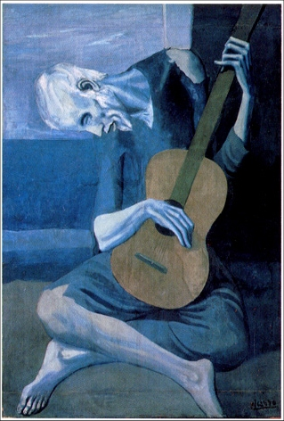

الرسام
بابلو بيكاسو
بابلو بيكاسو
بابلو رويز بيكاسو ولِد في 25 أكتوبر 1881، مالقة، إسبانيا - توفي في 8 أبريل 1973، موجان، فرنسا رسام ونحات وفنان تشكيلي إسباني وأحد أشهر الفنانين في القرن العشرين وينسب إليه الفضل في تأسيس الحركة التكعيبية في الفن.
اهم اعماله
- ثلاثة موسيقين
- - عازف القيثارة العجوز

- دورا مار والهر
العودة للصفحة الرئيسية